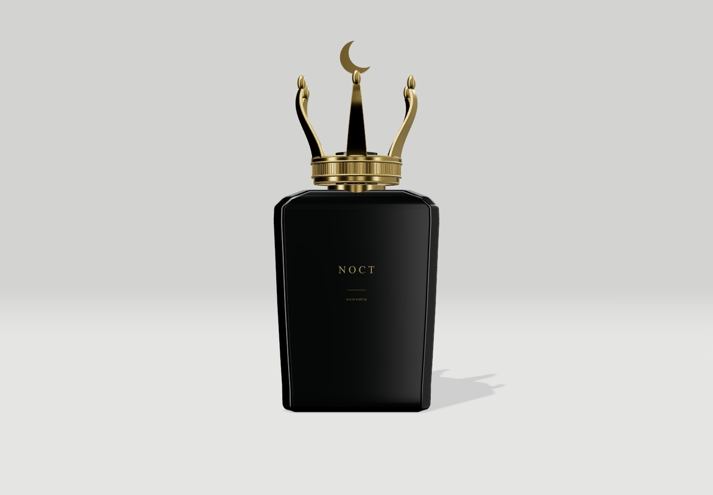
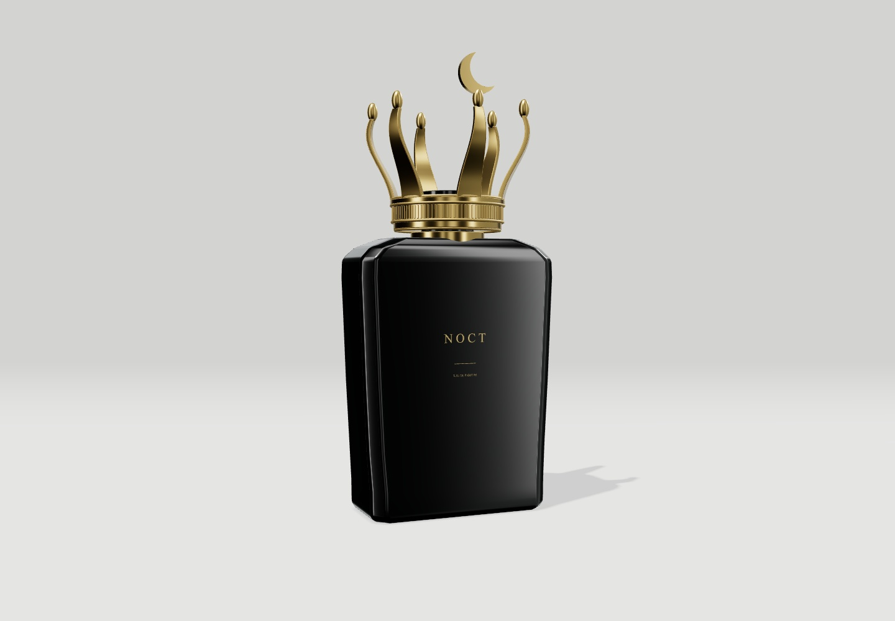
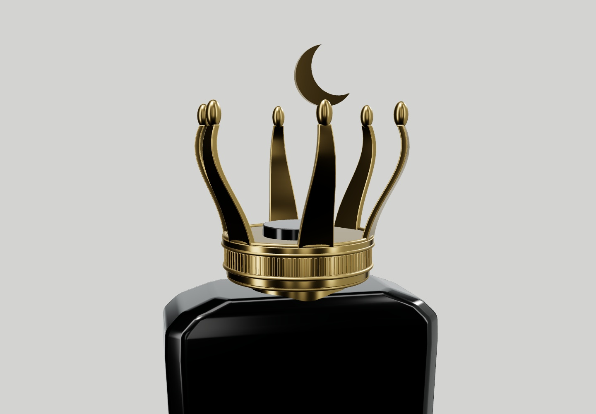
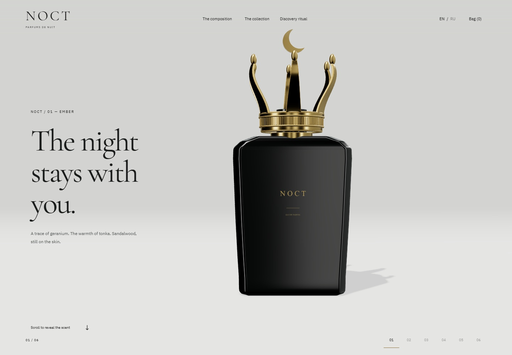
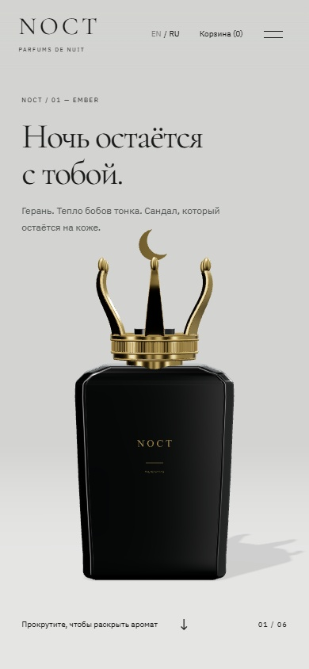

NOCT / CROWN & COMPOSITION
Ночь раскрывается.
Отдельный preview для оценки новой предметной сцены. Чёрный лак, золотая корона и одно воспроизводимое облако. Скролл связывает поворот, снятие короны, нажатие распылителя и три ноты. Основная публикация сохранена.
Вперёд. И обратно.
Непрерывная запись опубликованного сайта: история вперёд, возврат вверх, выбор аромата и объёма, количество и честное демо оформления. Без монтажа внутри сценария. Видео — 25 кадров/с; это ограничение записи, замеры рендера ниже сделаны отдельно.
Предмет в деталях






Из одного облака


Первый экран




Проверка и расход
Шесть браузерных сценариев и десять проверок логики прошли. Проверены EN/RU на 320 × 667, 390 × 844, 768 × 1024, 1440 × 900 и 1920 × 1080: корона в кадре, активная нота рядом с флаконом, без горизонтального переполнения. Корзина сохраняется после обновления; работают объёмы, количество, удаление и набор трёх разных пробников. При reduced motion и потере WebGL доступны последовательные ноты и покупательский сценарий.
Windows, Ryzen 5 7535HS, встроенная AMD Radeon через ANGLE D3D11, Chrome 156 headless, прогретые шейдеры, без ограничения CPU/сети и без параллельной записи. Медиана / p95 интервала кадра: desktop 7,6 / 8,3 мс, мобильная эмуляция 7,6 / 8,2 мс. На остановке рендер засыпает. Эти цифры относятся к этому компьютеру; физические iOS/Android и Safari не проверены.
| Операция | Кредиты |
|---|---|
| Прежние работы: лотос 6, Kling 19,5, первый Tripo 12 | 37,5 |
| Новый Tripo H3.1 — одна генерация | 12 |
| Итого из общего лимита 120 | 49,5 |
| Остаток | 70,5 |
Референс и ингредиенты созданы встроенной генерацией изображений, расход Higgsfield — 0. Исходный Tripo, редактируемый Blender и итоговый GLB сохранены в репозитории. Корпус ретопологизирован по сечениям Tripo, дефектные детали короны пересобраны в Blender. Это авторский концепт вымышленных ароматов; оплата и отправка заказа отсутствуют. Архивный Kling-фильм запускается отдельно по запросу и не работает одновременно с 3D.